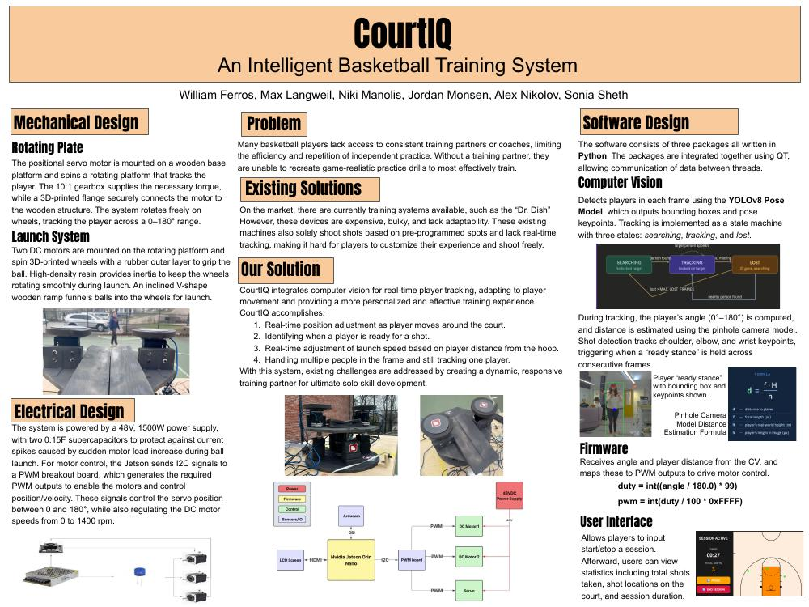

CourtIQ — Intelligent Basketball Training System
A responsive basketball passing machine that uses YOLOv8 pose estimation, player tracking, distance estimation, and real-time motor control to deliver passes to a moving player.
Contribution: electrical and power architecture, motor-control integration, mechanical development, system testing, and documentation.